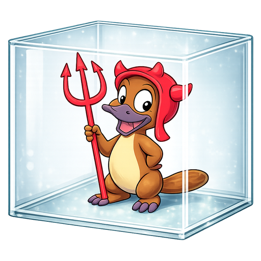

A Linux builder that lives in a box on your Mac.
HexBox is a nix-darwin module. Turn it on, and Nix on your Mac can build Linux packages, without a server or a VM to babysit.
- Lives in
- An Apple
containermachine on your Mac - Builds
aarch64-linuxderivations, sent by Nix- Wakes
- When a build needs it, in seconds
- Sleeps
- After five quiet minutes
- Keeps
- Its
/nixstore, from one nap to the next
inputs.hexbox.url = "github:RobertDeRose/nix-hex-box";
What it takes care of
- The plumbing
- HexBox writes
nix.buildMachines, SSH aliases, keys, and aknown_hostsfile that pins the builder’s host key. Linux derivations go to the box with nothing else to configure. - Waking and sleeping
- The first SSH connection boots the machine. Five minutes after the last one closes, the guest powers off. You never start or stop it yourself.
- Your choice of
container - Install Apple’s
containerfrom Homebrew, mise, or Apple’s package. HexBox finds it, even from the rootnix-daemon. - A small, current image
- The builder runs Alpine with OpenSSH and Lix, rebuilt weekly for security fixes. Point
imageContainerfileat your own Containerfile to use a custom one. - Your containers can reach your Mac
- By default, Apple containers resolve
host.container.internalto services on your Mac. - Telling you what’s wrong
- The
hbhelper checks the runtime, machine, SSH, and store, repairs what it can, and runs a real build to prove it works.
How a build gets to the box
Nix sees an ordinary ssh-ng remote builder. HexBox makes sure something is always ready to answer.
- Nix asks for Linux. A derivation needs
aarch64-linux, so thenix-daemonpicks thecontainer-buildermachine. - SSH knocks. Its
ProxyCommandswitches from root to you, because you own thecontainerruntime. - The box wakes. If
nix-builderis asleep, the proxy boots it and waits for its SSH server to answer. - The build runs inside.
socatrelays to the guest’ssshd, and itsnix-daemondoes the work. - Results come home. Outputs are copied back into your Mac’s store, ready to use.
- The box naps. With no connections left, it powers off after the idle timeout.
Install
-
Get Apple’s
containerHomebrew
brew install container container system startmise
mise use -g container container system startInstall it globally. A per-project install is invisible to the root
nix-daemon; for one of those, setcontainerBinaryto whatmise which containerprints.Apple’s package
gh release download --repo apple/container --pattern 'container-*-installer-signed.pkg' sudo installer -pkg container-*-installer-signed.pkg -target / container system start -
Add HexBox to your flake
{ inputs.hexbox.url = "github:RobertDeRose/nix-hex-box"; outputs = inputs: { darwinConfigurations.my-host = inputs.darwin.lib.darwinSystem { system = "aarch64-darwin"; modules = [ inputs.hexbox.darwinModules.default { services.container-builder = { enable = true; memory = "8G"; }; } ]; }; }; }The machine defaults to 4 CPUs and 1 GB of memory. Give it more for anything bigger than small packages.
-
Switch, then try a build
sudo darwin-rebuild switch --flake .#my-host hb builder repair hb builder testThe switch creates the builder’s SSH keys. The first
hb builder repairdownloads the image and creates the machine, so it takes a few minutes. After that, the box wakes in seconds.
A good fit if you
- Manage your Mac with
nix-darwinand build foraarch64-linux. - Already use Apple’s
container, or don’t mind installing it. - Want a builder that costs nothing while you aren’t building.
Not a fit if you
- Need
x86_64-linuxbuilds. The box is alwaysaarch64-linux. - Use an Intel Mac, or don’t use
nix-darwin. - Run NixOS VM tests on an M1 or M2. Without nested virtualization they run under emulation, and slowly.